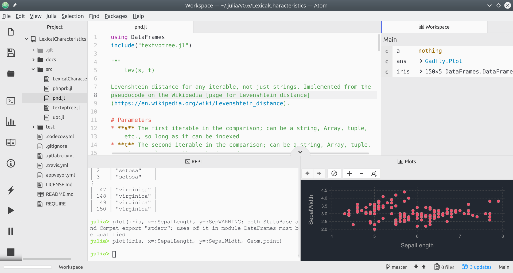

"Setting up Juno layout: Applying the click-and-drag metaphor in Atom"
I struggled for a while to get my Juno workspace set up how I wanted. Mostly, it was due to me not understanding how the click-and-drag metaphor applied in Atom. Anyway, I wanted to share how to get it set up for others, as well as write it down in a place that I'll be able to find later.
Once Juno is installed, the default layout (for me, at least) has the plots window sharing horizontal space with the workspace and code editor. Widescreen monitors like mine are too small for this to work. So, to move the plots panel:
- Click on it, and drag it to where you want it.
- Pause for a moment so Atom recognizes that you want to move it. You should see it split the space where you're dragging it to.
- Release the mouse. The plots window should now be occupying a different space.
The image below is a sample of my layout now. Obviously, this is not the only way to layout your development environment, and you should do what's best for you. But hopefully the way the click-and-drag metaphor is used is a bit clearer now! :)
